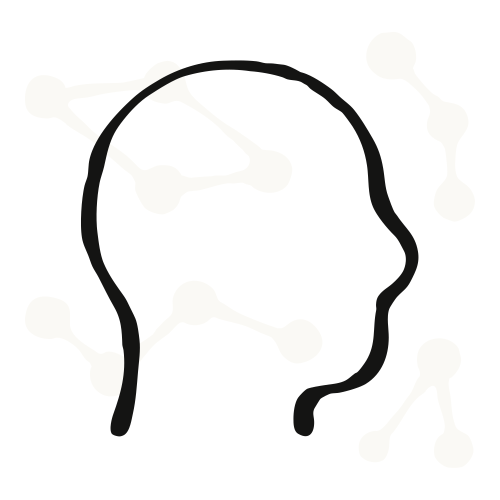
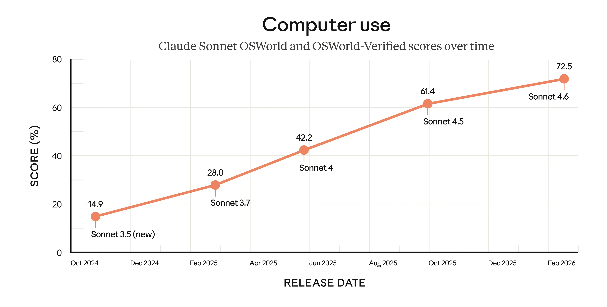
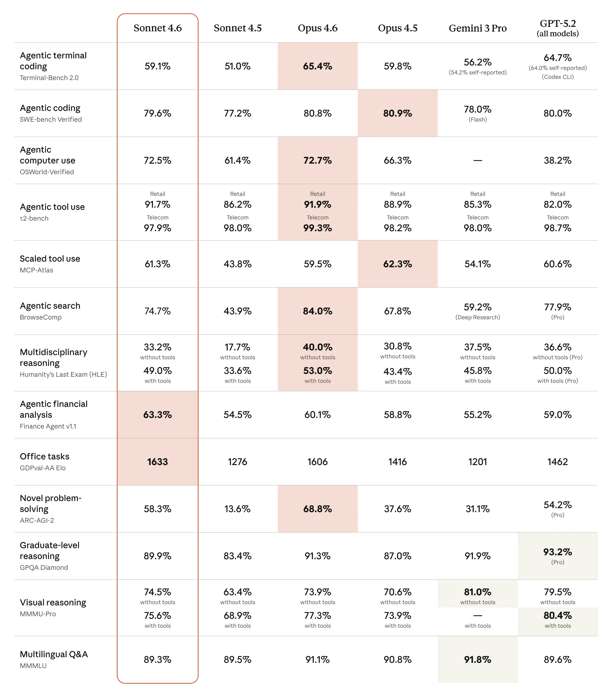
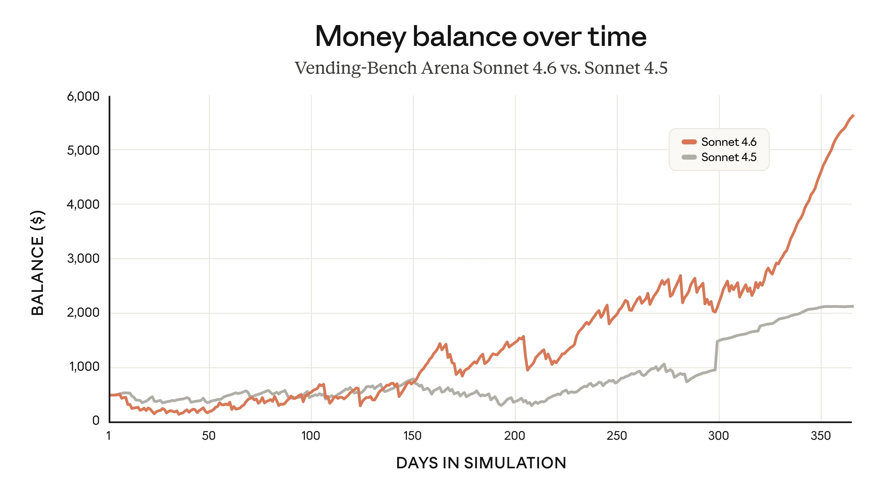

Introducing Claude Sonnet 4.6

Claude Sonnet 4.6 is our most capable Sonnet model yet. It’s a full upgrade of the model’s skills across coding, computer use, long-context reasoning, agent planning, knowledge work, and design. Sonnet 4.6 also features a 1M token context window in beta.
For those on our Free and Pro plans, Claude Sonnet 4.6 is now the default model in claude.ai and Claude Cowork. Pricing remains the same as Sonnet 4.5, starting at $3/$15 per million tokens.
Sonnet 4.6 brings much-improved coding skills to more of our users. Improvements in consistency, instruction following, and more have made developers with early access prefer Sonnet 4.6 to its predecessor by a wide margin. They often even prefer it to our smartest model from November 2025, Claude Opus 4.5.
Performance that would have previously required reaching for an Opus-class model—including on real-world, economically valuable office tasks—is now available with Sonnet 4.6. The model also shows a major improvement in computer use skills compared to prior Sonnet models.
As with every new Claude model, we’ve run extensive safety evaluations of Sonnet 4.6, which overall showed it to be as safe as, or safer than, our other recent Claude models. Our safety researchers concluded that Sonnet 4.6 has “a broadly warm, honest, prosocial, and at times funny character, very strong safety behaviors, and no signs of major concerns around high-stakes forms of misalignment.”
Computer use
Almost every organization has software it can’t easily automate: specialized systems and tools built before modern interfaces like APIs existed. To have AI use such software, users would previously have had to build bespoke connectors. But a model that can use a computer the way a person does changes that equation.
In October 2024, we were the first to introduce a general-purpose computer-using model. At the time, we wrote that it was “still experimental—at times cumbersome and error-prone,” but we expected rapid improvement. OSWorld, the standard benchmark for AI computer use, shows how far our models have come. It presents hundreds of tasks across real software (Chrome, LibreOffice, VS Code, and more) running on a simulated computer. There are no special APIs or purpose-built connectors; the model sees the computer and interacts with it in much the same way a person would: clicking a (virtual) mouse and typing on a (virtual) keyboard.
Across sixteen months, our Sonnet models have made steady gains on OSWorld. The improvements can also be seen beyond benchmarks: early Sonnet 4.6 users are seeing human-level capability in tasks like navigating a complex spreadsheet or filling out a multi-step web form, before pulling it all together across multiple browser tabs.
The model certainly still lags behind the most skilled humans at using computers. But the rate of progress is remarkable nonetheless. It means that computer use is much more useful for a range of work tasks—and that substantially more capable models are within reach.

At the same time, computer use poses risks: malicious actors can attempt to hijack the model by hiding instructions on websites in what’s known as a prompt injection attack. We’ve been working to improve our models’ resistance to prompt injections—our safety evaluations show that Sonnet 4.6 is a major improvement compared to its predecessor, Sonnet 4.5, and performs similarly to Opus 4.6. You can find out more about how to mitigate prompt injections and other safety concerns in our API docs.
Evaluating Claude Sonnet 4.6
Beyond computer use, Claude Sonnet 4.6 has improved on benchmarks across the board. It approaches Opus-level intelligence at a price point that makes it more practical for far more tasks. You can find a full discussion of Sonnet 4.6’s capabilities and its safety-related behaviors in our system card; a summary and comparison to other recent models is below.

In Claude Code, our early testing found that users preferred Sonnet 4.6 over Sonnet 4.5 roughly 70% of the time. Users reported that it more effectively read the context before modifying code and consolidated shared logic rather than duplicating it. This made it less frustrating to use over long sessions than earlier models.
Users even preferred Sonnet 4.6 to Opus 4.5, our frontier model from November, 59% of the time. They rated Sonnet 4.6 as significantly less prone to overengineering and “laziness,” and meaningfully better at instruction following. They reported fewer false claims of success, fewer hallucinations, and more consistent follow-through on multi-step tasks.
Sonnet 4.6’s 1M token context window is enough to hold entire codebases, lengthy contracts, or dozens of research papers in a single request. More importantly, Sonnet 4.6 reasons effectively across all that context. This can make it much better at long-horizon planning. We saw this particularly clearly in the Vending-Bench Arena evaluation, which tests how well a model can run a (simulated) business over time—and which includes an element of competition, with different AI models facing off against each other to make the biggest profits.
Sonnet 4.6 developed an interesting new strategy: it invested heavily in capacity for the first ten simulated months, spending significantly more than its competitors, and then pivoted sharply to focus on profitability in the final stretch. The timing of this pivot helped it finish well ahead of the competition.

Early customers also reported broad improvements, with frontend code and financial analysis standing out. Customers independently described visual outputs from Sonnet 4.6 as notably more polished, with better layouts, animations, and design sensibility than those from previous models. Customers also needed fewer rounds of iteration to reach production-quality results.
Claude Sonnet 4.6 matches Opus 4.6 performance on OfficeQA, which measures how well a model can read enterprise documents (charts, PDFs, tables), pull the right facts, and reason from those facts. It’s a meaningful upgrade for document comprehension workloads.
The performance-to-cost ratio of Claude Sonnet 4.6 is extraordinary—it’s hard to overstate how fast Claude models have been evolving in recent months. Sonnet 4.6 outperforms on our orchestration evals, handles our most complex agentic workloads, and keeps improving the higher you push the effort settings.
Claude Sonnet 4.6 is a notable improvement over Sonnet 4.5 across the board, including long-horizon tasks and more difficult problems.
Out of the gate, Claude Sonnet 4.6 is already excelling at complex code fixes, especially when searching across large codebases is essential. For teams running agentic coding at scale, we’re seeing strong resolution rates and the kind of consistency developers need.
Claude Sonnet 4.6 has meaningfully closed the gap with Opus on bug detection, letting us run more reviewers in parallel, catch a wider variety of bugs, and do it all without increasing cost.
For the first time, Sonnet brings frontier-level reasoning in a smaller and more cost-effective form factor. It provides a viable alternative if you are a heavy Opus user.
Claude Sonnet 4.6 meaningfully improves the answer retrieval behind our core product—we saw a significant jump in answer match rate compared to Sonnet 4.5 in our Financial Services Benchmark, with better recall on the specific workflows our customers depend on.
Box evaluated how Claude Sonnet 4.6 performs when tested on deep reasoning and complex agentic tasks across real enterprise documents. It demonstrated significant improvements, outperforming Claude Sonnet 4.5 in heavy reasoning Q&A by 15 percentage points.
Claude Sonnet 4.6 hit 94% on our insurance benchmark, making it the highest-performing model we’ve tested for computer use. This kind of accuracy is mission-critical to workflows like submission intake and first notice of loss.
Claude Sonnet 4.6 delivers frontier-level results on complex app builds and bug-fixing. It’s becoming our go-to for the kind of deep codebase work that used to require more expensive models.
Claude Sonnet 4.6 produced the best iOS code we’ve tested for Rakuten AI. Better spec compliance, better architecture, and it reached for modern tooling we didn’t ask for, all in one shot. The results genuinely surprised us.
Sonnet 4.6 is a significant leap forward on reasoning through difficult tasks. We find it especially strong on branched and multi-step tasks like contract routing, conditional template selection, and CRM coordination—exactly where our customers need strong model sense and reliability.
We’ve been impressed by how accurately Claude Sonnet 4.6 handles complex computer use. It’s a clear improvement over anything else we’ve tested in our evals.
Claude Sonnet 4.6 has perfect design taste when building frontend pages and data reports, and it requires far less hand-holding to get there than anything we’ve tested before.
Claude Sonnet 4.6 was exceptionally responsive to direction — delivering precise figures and structured comparisons when asked, while also generating genuinely useful ideas on trial strategy and exhibit preparation.
Product updates
On the Claude Platform, Sonnet 4.6 supports both adaptive thinking and extended thinking, as well as context compaction in beta, which automatically summarizes older context as conversations approach limits, increasing effective context length.
On our API, Claude’s web search and fetch tools now automatically write and execute code to filter and process search results, keeping only relevant content in context—improving both response quality and token efficiency. Additionally, code execution, memory, programmatic tool calling, tool search, and tool use examples are now generally available.
Sonnet 4.6 offers strong performance at any thinking effort, even with extended thinking off. As part of your migration from Sonnet 4.5, we recommend exploring across the spectrum to find the ideal balance of speed and reliable performance, depending on what you’re building.
We find that Opus 4.6 remains the strongest option for tasks that demand the deepest reasoning, such as codebase refactoring, coordinating multiple agents in a workflow, and problems where getting it just right is paramount.
For Claude in Excel users, our add-in now supports MCP connectors, letting Claude work with the other tools you use day-to-day, like S&P Global, LSEG, Daloopa, PitchBook, Moody’s, and FactSet. You can ask Claude to pull in context from outside your spreadsheet without ever leaving Excel. If you’ve already set up MCP connectors in Claude.ai, those same connections will work in Excel automatically. This is available on Pro, Max, Team, and Enterprise plans.
How to use Claude Sonnet 4.6
Claude Sonnet 4.6 is available now on all Claude plans, Claude Cowork, Claude Code, our API, and all major cloud platforms. We’ve also upgraded our free tier to Sonnet 4.6 by default—it now includes file creation, connectors, skills, and compaction.
If you’re a developer, you can get started quickly by using claude-sonnet-4-6 via the Claude API.
Footnotes
- For GPT-5.2 and Gemini 3 Pro, we compared against the best reported model version available via API in the charts and table.
- OSWorld: OSWorld tests a specific set of computer tasks in a controlled environment. It’s one of the best measures we have, but not a complete picture of real-world computer use. Real-world computer use is often messier and more ambiguous, and it carries higher stakes for errors. No benchmark fully captures that yet.
- Terminal-Bench 2.0: We report both scores reproduced on our infrastructure and published scores from other labs. All runs used the Terminus-2 harness, except for OpenAI’s Codex CLI. All experiments used 1× guaranteed/3× ceiling resource allocation and 5–15 samples per task across staggered batches. The Sonnet 4.6 score reported is with thinking turned off.
- SWE-bench Verified: Our score was averaged over 10 trials. With a prompt modification, we saw a score of 80.2%.
- Humanity’s Last Exam: Claude models run “with tools” were run with web search, web fetch, code execution, programmatic tool calling, context compaction triggered at 50k tokens up to 3M total tokens, max reasoning effort, and adaptive thinking enabled. A domain blocklist was used to decontaminate eval results.
- BrowseComp: Claude models were run with web search, web fetch, programmatic tool calling, context compaction triggered at 50k tokens up to 10M total tokens, max reasoning effort, and no thinking enabled.
- ARC-AGI-2: Claude Sonnet 4.6 was run with max and high effort and a 120k thinking budget score. The score shown reflects max effort; with high effort, we achieve a score of 60.4%.
- MMMU-Pro: We made two small updates to our MMMU-Pro implementation that have affected the score: 1) our previous implementation contained the prefix “Let’s think step-by-step,” which we have removed, and 2) we previously graded this multiple-choice eval by looking at on-policy token probabilities of the multiple-choice options; we now grade it using a separate model (Claude Sonnet 4).
Related content
Claude discovers a novel enzyme system with CRISPR-like repeats
We’re announcing a new life sciences research group and laboratory at Anthropic. This post introduces the team behind this work and shares early results in which Claude discovered a novel enzyme system with properties reminiscent of CRISPR, with only high-level direction from our scientists.
Read morePartnering with Accenture on embedded evaluation
Read moreIntroducing the Life Sciences Verification Program
The Life Sciences Verification Program (LSVP) gives life science professionals access to Claude Mythos, Opus, and Sonnet models with a refined set of safeguards more permissive for biology-related work.
Read more